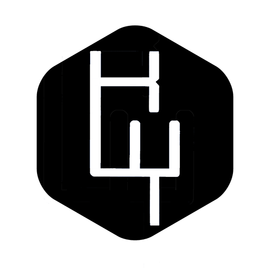

<div class="row">
    <div class="text-center">
        <h2>Resume</h2>
        
        <p class="text-faded">Sometimes, it is not easy to get to know a person.  
            Therefore, I am trying to tell you about myself.
        </p>
        <p class="quote">
            "This is important: to get to know people, listen, expand the circle of ideas.
            The world is crisscrossed by roads that come closer together and move apart,
            but they lead towards the Good."
        </p>
        <p class="quote">
            — Pope Francis —
        </p>
        <button mat-raised-button color="primary" onclick="window.open('../../assets/resume_1.pdf');">
        View Resume PDF</button>
    </div>
</div>